Bayesian food loss estimation
1 Introduction
This document describes the current implementation of the Bayesian food loss estimation workflow developed in R for use within the FAO Statistical Working System (SWS). The workflow has been designed to support the preparation, estimation, prediction, and saving of Bayesian food loss estimates in a modular way, so that the different stages of the process can be run, checked, and updated separately.
The overall objective of the workflow is to generate model-based food loss estimates by combining observed loss data with a set of external covariates and hierarchical grouping structures. In practical terms, the process brings together information on countries, products, production support, harvest timing, climate conditions, GDP per capita, and logistics performance, and uses these inputs to fit a Bayesian hierarchical model capable of producing posterior predictive estimates for valid country-product-year combinations.
The implementation is currently organized into three main R plugins:
- Covariates preparation plugin
- Model fitting plugin
- Predictions plugin
These three plugins form a connected pipeline. The first plugin prepares the country grouping framework and the main external covariates required by the model, and stores them in intermediate SWS datatables. The second plugin reads these prepared inputs, constructs the modelling dataset, fits the Bayesian hierarchical model, and saves the posterior outputs together with the auxiliary objects needed for prediction. The third plugin uses the saved posterior samples and prediction inputs to generate posterior predictive distributions, summarize them into quantiles, reshape the outputs into the required SWS structure, and save the final estimates to the target datasets.
A central feature of this implementation is its reliance on a hierarchical country and product structure. Countries are organized using a custom grouping system derived from both M49 and SDG hierarchies, while products are linked to food groups, CPC items, and country-product interaction levels. This structure allows the model to borrow strength across related countries, subregions, and food groups, which is especially important in a context where observed loss data are sparse, unevenly distributed, or missing for many combinations of country, year, and product.
Another key aspect of the workflow is the explicit preparation and smoothing of covariates before model fitting. Rather than relying directly on raw downloaded series, the implementation preprocesses temperature, rainfall, GDP per capita, and Logistics Performance Index data into forms that are consistent with the modelling support and the prediction stage. This improves reproducibility, keeps the estimation step more controlled, and makes it easier to trace how each covariate enters the model.
The workflow is also designed with operational use in mind. Intermediate objects are saved between stages, and the ordered category definitions used when variables are converted to factors in R are preserved for consistency between fitting and prediction. In this workflow, this includes variables such as country, region, food group, product, stage, method, source, and interaction identifiers. Preserving these factor levels is essential because they determine the numeric indexing used by the Bayesian model and must remain unchanged when posterior predictions are generated. This makes the implementation more robust for repeated runs, testing, and future modifications, while also helping control memory usage and computational load.
This workflow is designed to support reproducible execution by saving intermediate objects between stages, preserving the factor-level structure used during fitting, and storing the scaling constants and prediction-support objects required by downstream steps. Reproducibility is further supported by the use of renv.lock to maintain a controlled package environment.
This document provides technical documentation of the current implementation as reflected in the existing R code. Its purpose is to describe what has been implemented, how the three plugins are connected, what data structures and intermediate outputs are created, and how the final estimates are produced and written back into SWS.
In the following sections, the workflow is described step by step, beginning with the preparation of covariates, then the construction and fitting of the Bayesian model, and the generation and saving of posterior predictions. The final part of the document is dedicated to the alternative modeling strategies that were implemented, including the alternative-prior Bayesian specification considered for robustness assessment, as well as to the comparison of the resulting food loss percentages and food loss indices across methods.
2 General workflow
The Bayesian food loss estimation workflow is organized as a sequential pipeline composed of three main R plugins. Each plugin performs a distinct part of the process, but the three stages are tightly connected through shared intermediate outputs, common grouping structures, and saved model objects.
The first stage is focused on covariates preparation and is implemented through the SWS plugin bayesian_food_loss_covariates. Its role is to construct the main support objects and external covariates required by the modelling workflow. In particular, it builds the country grouping table used throughout the project, prepares the modelling country list, retrieves and reshapes weather covariates, prepares GDP and Logistics Performance Index data, and saves the processed outputs into dedicated SWS datatables. These intermediate outputs are designed to be reused by later stages rather than recomputed every time the model is fit.
The second stage is focused on model fitting and is carried out by the SWS plugin bayesian_food_loss. This plugin loads the prepared covariates together with the main model inputs, reconstructs the grouping structure used by the model, and builds the final model training dataset. At this stage, the observed food loss data are joined with product information, production support, harvest calendar information, climate covariates, GDP, and LPI. The plugin then performs several preprocessing steps, including filtering, imputation, aggregation of repeated series, treatment of duplicated or low-variance observations, and factor construction for the hierarchical model. Once the training dataset is ready, the plugin fits the Bayesian hierarchical model in NIMBLE and saves the posterior samples and auxiliary objects needed for prediction.
The third stage concerns posterior prediction and output generation and is carried out by the SWS plugin bayesian_food_loss_pred. This final stage loads the posterior draws from the fitted model together with the saved prediction inputs and metadata. Using these objects, it reconstructs the necessary coefficient arrays, generates posterior predictions for valid country-product-year combinations, and computes predictive quantiles. The plugin then reshapes the resulting outputs into the structure required by the target SWS datasets and saves the final food loss estimates separately for the SUA and Survey outputs.
A central characteristic of the workflow is that it is modular but not independent across stages. The outputs of the first plugin are directly consumed by the second, and the outputs of the second are essential inputs for the third. For this reason, consistency of country codes, factor levels, year ranges, and support restrictions is critical across the entire pipeline. In particular, the workflow preserves common structures such as the M49 grouping table, the valid production support combinations, the factor level mappings used in the fitted model, and the scaling constants applied to continuous covariates.
Another important feature of the workflow is that predictions are not generated for every theoretical combination of country, product, and year. Instead, the workflow explicitly restricts modelling and prediction support to valid combinations derived from production data. This ensures that the final outputs remain aligned with the relevant production structure and avoids generating estimates for combinations that fall outside the intended modelling support.
The workflow is also designed to separate preparation, estimation, and output generation as much as possible from a computational point of view. Intermediate objects are saved between steps, large posterior outputs are stored in compressed form, and prediction outputs are generated and saved in chunks in order to control memory usage. This makes the overall implementation more robust, easier to test, and more practical to run within the SWS environment.
The figure below provides a schematic overview of the full Bayesian food loss workflow and shows how the three plugins are connected through intermediate objects and final outputs.  In summary, the workflow can be read as a three-step process: first prepare the modelling covariates and country structure, then fit the Bayesian model on the processed training data, and finally use the posterior results to generate and save food loss predictions. The following sections describe each of these three plugins in detail.
In summary, the workflow can be read as a three-step process: first prepare the modelling covariates and country structure, then fit the Bayesian model on the processed training data, and finally use the posterior results to generate and save food loss predictions. The following sections describe each of these three plugins in detail.
3 Covariates preparation
The covariates preparation stage is carried out by the SWS plugin bayesian_food_loss_covariates. Its role is to prepare the main support objects and external covariates required by the Bayesian food loss workflow before model fitting. In practical terms, this stage constructs the country grouping structure used throughout the pipeline, defines the modelling year range, prepares climate and macroeconomic covariates, and stores the processed outputs in SWS datatables so that they can be reused by downstream plugins.
A key objective of this stage is to separate raw data retrieval from model estimation. Rather than downloading and processing all external inputs inside the fitting stage, the workflow prepares them in advance and saves them in a standardized form. This makes the later stages more reproducible, reduces repeated computation, and helps ensure that model fitting and prediction use a consistent set of covariates and support definitions.
3.1 Purpose
The main purpose of this stage is to create a coherent and reusable covariate layer for the Bayesian model. More specifically, the plugin:
- constructs the country grouping table used by the workflow;
- defines the modelling year range based on plugin parameters;
- downloads and reshapes monthly temperature and rainfall data;
- prepares PPP (Purchasing Power Parity) GDP per capita data by combining World Bank and IMF sources;
- prepares Logistics Performance Index data from the World Bank;
- smooths selected macroeconomic covariates where required; and
- writes the final processed outputs into dedicated SWS datatables.
These outputs are later read by the model fitting plugin and are also indirectly used during the prediction stage.
3.2 Parameters
The plugin uses two computation parameters to define the modelling year range:
start_year, with default value1991;end_year, with default value2024.
These parameters are used to build the vector years_out, which determines the years for which the plugin prepares the covariates and related support objects.
In the current implementation, the covariates preparation plugin is tied to the source coverage and source-specific retrieval logic used in the code. In particular, some inputs are obtained through hard-coded external endpoints or versioned source files, so extending the workflow to years beyond the currently covered period may require updating the download logic, endpoint references, or source files used by the plugin. This is especially relevant for climate inputs, where the current code is explicitly configured to use the historical monthly series up to 2024, and for source series such as LPI, whose observed coverage is more limited than the full modelling year range. For example, the LPI source series used through the World Bank indicator LP.LPI.OVRL.XQ is currently available only through 2022. As a result, for later model years the workflow relies on the plugin’s smoothing procedure rather than on newly observed LPI values.
3.3 Country grouping table
The first major task performed by the plugin is the construction of the country grouping table, referred to in the code as M49. This table is a central object in the workflow because it defines the country-level grouping structure used in the subsequent modelling stages.
The table is derived from the geographicAreaM49 codelist in the lossWaste domain and from two tree structures:
- the M49 hierarchy rooted at
"1"; - the SDG hierarchy rooted at
"1.04".
Starting from these structures, the plugin identifies the set of country codes that are valid leaves in both hierarchies and then derives, for each country, its corresponding SDG region and M49-based higher-level grouping.
A central feature of this construction is the creation of two custom hierarchical aggregation levels:
sdg_subregion_l1sdg_subregion_l2
These two levels are hybrid groupings derived from both the SDG and M49 hierarchies and are designed specifically for the Bayesian modelling framework.
At level 1, countries are grouped into broad modelling regions such as Asia, Europe, Northern Africa and Western Asia, Sub-Saharan Africa, Latin America and the Caribbean, Northern America, and Oceania excluding Australia and New Zealand.
At level 2, countries are assigned to a more detailed regional subdivision. Depending on the level 1 group, this second level is derived from M49 subregions or, where needed during the construction logic, from intermediate regional structure. For example, Asian countries are split into subregions such as Southern Asia or Eastern Asia, and European countries into Northern, Southern, Eastern, or Western Europe. At the same time, Australia and New Zealand are joined with Northern America, since it is believed they have some similarities in their agroeconomic structures, and Northern Africa is merged with Western Asia, reflecting similarity in climate and terrain.
After the grouping structure is constructed, ISO3 codes are attached to countries using the countrycode package, with manual handling for selected special cases. Countries not retained in the intended modelling structure are removed.
The final M49 table therefore provides, for each country, the country code, country name, SDG region, level 1 grouping, level 2 grouping, ISO3 code, and the aliases and numeric identifiers later used by the model, such as region_l1, region_l2, l1_num, l2_num, and m49_numeric.
3.4 Raw covariate output directory
The plugin creates a directory under the shared path to store raw or wide-format extracts of the downloaded covariates. This directory is used for traceability and inspection purposes and contains Excel versions of the climate, GDP, and LPI inputs before or alongside their transformation into final long-format SWS datatables.
3.5 Weather covariates
3.5.1 Temperature
Temperature data are downloaded from the World Bank Climate Knowledge Portal API using the CRU TS 4.09 historical monthly time series. The response is returned in JSON format and contains country-level monthly values indexed by year and month.
The plugin parses the JSON response, extracts the temperature component, and reshapes the data in two stages. First, it builds a wide table with one row per country and one column per month. This wide version is saved locally as an Excel file for traceability. Second, it converts the same data into long format and separates the combined time identifier into distinct year and month variables.
The final processed temperature output is written to the SWS datatable temperature_bayesian, using the variables:
isocodeyearmonthtemperature_c
This datatable is later read by the model fitting plugin and used to derive climate covariates aligned to the harvest period defined from the crop calendar.
3.5.2 Rainfall
Rainfall is prepared in the same way as temperature and is obtained from the same World Bank Climate Knowledge Portal API response. After extracting the precipitation component from the JSON structure, the plugin first builds a wide country-by-month table, saves it locally as an Excel file, and then reshapes it into long format with separate year and month columns.
The final rainfall output is written to the SWS datatable rainfall_bayesian, using the variables:
isocodeyearmonthrainfall_mm
Together, the temperature and rainfall datatables provide the climate covariates later matched to harvest timing in the model fitting stage.
3.6 GDP per capita covariate
GDP per capita PPP is prepared by combining two external sources:
- World Bank WDI data, using indicator
NY.GDP.PCAP.PP.CD; - IMF DataMapper data, using indicator
PPPPC.
The plugin first retrieves the World Bank series for all available countries and years and saves a wide-format extract locally. It then retrieves the IMF series through the IMF API and also stores a wide-format extract. Both sources are transformed into long format and restricted to the modelling countries and years.
The two sources are then merged into a single table. World Bank values are used as the preferred source, while IMF values are used only when the World Bank value is missing. The plugin keeps track of the data source used for each country-year combination.
An additional manual imputation is implemented for South Sudan, where pre-observation values are blended with Sudan values up to the first available South Sudan GDP observation.
The resulting GDP series is then smoothed separately by country using a Generalized Additive Model on the log scale:
where is a smooth function of time. A log transformation on the left-hand side of the equation is used so that the distribution of the model residuals is closer to the assumed Normal distribution and so that the model cannot predict negative GDP per capita values. This model is implemented in the mgcv package in R, with a cubic spline basis assumed for . For each country, the number of knots for is specified as the number of years for which GDP per capita estimates are available, divided by four and rounded up.
The smoothed series is stored in the variable sm_GDP_percap, while the unsmoothed combined series is kept as GDP_percap. Remaining missing smoothed values are imputed using the mean within region_l2 and year.
The final GDP output is written to the SWS datatable gdp_bayesian, using the variables:
isocodeyeargdp_smgdp_percap
3.7 Logistics Performance Index covariate
The Logistics Performance Index covariate is prepared from the World Bank WDI indicator LP.LPI.OVRL.XQ. The plugin downloads the raw series for all available countries and years, saves a wide-format extract locally, and then reshapes the data into long format.
After excluding aggregate regions, the plugin joins the LPI observations to the full country-year grid and the smoothed GDP covariate, and then fits a generalized additive model with mgcv::bam. The model represents LPI as the sum of a smooth effect of standardized year (s(year_sc, k = 7)), a smooth effect of standardized smoothed GDP per capita (s(sm_GDP_percap_sc)), a country random intercept (s(iso3, bs = "re")), and a country-specific random slope on year (s(iso3, bs = "re", by = year_sc)). The smooth terms are represented using thin-plate spline basis functions with second-order smoothing penalties. For the year effect, the model uses 7 knots, corresponding to one knot for each year in which observed LPI data are available, while for the smooth effect of smoothed GDP per capita it uses the default basis dimension of 10 knots. The fitted model is then used to predict smoothed LPI values for the full grid of modelling countries and years. More in detail, a single smooth regression modelling approach is implemented:
where and are smooth functions of centered and scaled year and of smooth GDP per capita, and and are country-level random intercepts and slopes of the centered and scaled year. Thus the two smooth functions pool information across countries for which LPI data were available, to allow prediction in countries without LPI, while the random intercepts and slopes allow for a closer fit for interpolation in countries with data for some years.
The resulting smoothed LPI series is stored in sm_lpi in the intermediate object LPI_full, while the original observed series is retained in lpi. In the final output written to SWS, these are saved as lpi_sm and lpi_raw, respectively.
The final LPI output is written to the SWS datatable lpi_bayesian, using the variables:
isocodeyearlpi_smlpi_raw
3.8 Main outputs
At the end of this stage, the plugin produces the main processed covariates objects required by the rest of the workflow. The principal outputs are:
- the
M49country grouping table; - the SWS datatable
temperature_bayesian; - the SWS datatable
rainfall_bayesian; - the SWS datatable
gdp_bayesian; - the SWS datatable
lpi_bayesian.
In addition, the plugin stores raw or wide-format Excel files for inspection and reproducibility purposes.
3.9 Schematic workflow of the covariates preparation plugin
The figure below provides a schematic overview of the covariates preparation plugin. It summarizes the main source inputs, the core processing steps carried out inside the plugin, and the processed outputs produced for downstream use in the Bayesian food loss workflow.

As shown in the Figure above, the plugin starts from the country hierarchy and external climate and macroeconomic sources, constructs the M49 country grouping table, prepares the temperature, rainfall, GDP, and LPI covariates, and then writes the processed outputs for use by the subsequent stages of the workflow.
3.10 Role in the overall workflow
This stage provides the covariates backbone of the Bayesian food loss estimation workflow. The outputs generated here are directly used by the model fitting plugin, which reads the prepared weather, GDP, and LPI datatables and combines them with the harvest calendar, product support, and observed loss data. As a result, the correctness and consistency of this covariates preparation stage are essential for both the fitting and the prediction phases that follow.
4 Model fitting
The model fitting stage is carried out by the SWS plugin bayesian_food_loss. This stage is responsible for transforming the available food loss observations and the prepared covariates into a coherent training dataset, estimating the Bayesian hierarchical model in NIMBLE, and saving all the posterior outputs and auxiliary objects required by the prediction stage.
In operational terms, this stage sits at the center of the workflow. The previous stage produces the covariates layer and the country grouping structure, while the following stage depends entirely on the saved outputs created here. For this reason, the fitting stage does not simply estimate a model: it also defines the final modelling support, reconstructs the grouping structure used by the hierarchy, aligns all identifiers and factor levels, and preserves the scaling conventions that must later be reused in prediction.
A particularly important feature of this stage is that it combines several different sources of information that were not originally stored in a single unified structure. The observed food loss data, the product reference information, the country groupings, the production support, the harvest calendar, the weather covariates, the GDP covariate, and the LPI covariate all enter the workflow separately. The fitting plugin assembles them into one modelling dataset and then applies a sequence of preprocessing rules intended to reduce duplication, remove invalid support, harmonize labels, and improve the statistical quality of the final estimation input. Here, product reference information refers to the tables that describe and classify products, mainly the mappings between CPC item codes, crop or product names, and food-group groupings used in the model, such as FAOCrops and fbsTree1.
Even though the outputs of this plugin are saved on the shared drive and not written directly to the final SWS estimate datasets, the user is still required to set Food loss estimates (SUA level) as the involved dataset in the plugin configuration.
4.1 Purpose
The purpose of this stage is twofold.
First, it prepares the final training dataset used by the Bayesian food loss model. This includes reconstructing the grouping structure, restricting the support to valid production combinations, attaching the relevant covariates to each observation, and cleaning the observed loss data before estimation.
Second, it estimates the hierarchical Bayesian model and saves the fitted posterior outputs in a form that can be reused directly by the posterior prediction stage.
More specifically, the plugin:
- loads the core model inputs from shared storage;
- reconstructs the
M49country grouping table and the associated modelling identifiers; - prepares the production support used to restrict valid country-product-year combinations;
- prepares and imputes the harvest calendar;
- reads the processed GDP, temperature, rainfall, and LPI covariates from SWS datatables;
- constructs the final model training dataset by joining all required components;
- applies duplicate handling, time-series reduction, exclusion rules, factor construction, and outlier treatment;
- defines the hierarchical Bayesian model in NIMBLE;
- runs parallel MCMC estimation; and
- saves the posterior draws and all auxiliary objects needed for prediction.
4.2 Plugin inputs
The plugin uses several categories of inputs.
The first category consists of the core observed loss inputs used to build the training dataset. The model training dataset is assembled inside the plugin by combining SWS-derived observed loss percentages, reconstructed from production, import, and loss quantities, with filtered and harmonized loss-percentage records from flw_lossperfactors__20250506_solr.
First, the plugin retrieves the agricultural quantities needed to reconstruct observed SWS loss percentages. In particular, it reads:
- production quantity from the
aproductiondataset of theagriculturedomain using element5510; - import quantity from the same source using element
5610; - loss quantity using element
5016, retrieved from both SUA-based and AP-based sources and then combined within the plugin to define the retained observation for each country-product-year combination.
The SUA-side loss quantity is retrieved through getLossData_SUA(), which combines:
suafbs / sua_balancedfor the new-methodology period;faostat_one / updated_sua_2013_datafor the earlier period.
The AP-side loss quantity is retrieved through getLossData_AP(), which reads element 5016 directly from agriculture / aproduction.
In both functions, when protected = TRUE, the plugin retains only those observations whose flag combination, defined as the pair (flagObservationStatus, flagMethod), is marked as Protected == TRUE in faoswsFlag::flagValidTable. Thus, in this workflow, “protected” refers to a predefined subset of valid flag combinations used to filter the retained loss observations.
Second, the plugin reads the external loss-factor datatable flw_lossperfactors__20250506_solr, which contains loss-percentage records by country, year, product, and supply-chain stage together with source and collection metadata. These observations are filtered, harmonized, deduplicated, and aggregated where needed before being combined with the reconstructed SWS loss observations. Here, harmonization refers mainly to recoding country, product, and supply-chain-stage identifiers into a consistent structure across sources so that the records can be combined and used coherently in the modelling dataset.
Together, these two sources form the core observed loss input from which the final training dataset is built.
Additional supporting inputs used in this part of the workflow include:
FAOCrops, which links CPC item codes to crop descriptions;gfli_basket_cpc_article_2018(fbsTree1), which provides the product-to-food-group mapping used by the model;crop_calendar_nov17(CropCalendar), which provides harvest timing information;a2017regionalgroupings_sdg_feb2017, which is used to attach country identifiers such asisocodeandcountryin the preparation of the observed loss inputs.
The second category consists of the covariate datatables prepared by the previous stage and stored in SWS. These include:
gdp_bayesiantemperature_bayesianrainfall_bayesianlpi_bayesian
The third category consists of structural support objects recreated inside the plugin, most importantly the country grouping table M49 and the valid production support derived from the agricultural production dataset.
As in the covariates preparation stage, the plugin defines the modelling year range using the computation parameters start_year and end_year. If these parameters are not provided, the default range 1991:2024 is used.
In this workflow, country information is used through more than one identifier. The main country key for observed loss data and production support is the M49 code, represented in the plugin mainly through geographicAreaM49 and m49_numeric. At the same time, ISO3 country codes (isocode / iso3) are used for joining the prepared covariates and for defining some of the model factors. The actual hierarchical country grouping used by the model is provided by the reconstructed M49 table, in particular through the derived grouping variables region_l1 and region_l2.
4.3 Preparation of structural support objects
Before constructing the training data, the plugin standardizes part of the product classification used by the model. It explicitly reassigns some food groups, such as splitting roots and tubers and oil-bearing crops into separate categories. After that, it creates a numeric basket identifier through basket_num and joins the product metadata with FAOCrops in order to attach the CPC item code measureditemcpc.
This product structure is used repeatedly in the model, both for the construction of the modelling dataset and for the hierarchical effects defined in the Bayesian specification.
The model fitting plugin reconstructs the M49 country grouping table internally and uses it as the main hierarchical country support object for the estimation stage. The grouping logic is the same as the one described in the covariates preparation section and is therefore not repeated here. For convenience and inspection, the reconstructed table is also written to shared storage as M49.csv.
4.4 Preparation of production support
A key step in the fitting stage is the construction of the valid production support.
The plugin queries the aproduction dataset in the agriculture domain using the element code 5510, the model country list, the CPC items present in the model product list, and the selected year range. The resulting data are then reduced to a support table with the three keys:
m49_numericyearmeasureditemcpc
This support table is stored as prod_support.
Its role is to define the valid country-product-year combinations retained by the workflow. Later in the plugin, the observed training data are filtered so that only rows whose country, year, and CPC item appear in prod_support are kept. This ensures that the modelling dataset remains aligned with valid production support and prevents the model from being fit on unsupported combinations.
The plugin next prepares the harvest calendar information needed to match monthly weather covariates to the relevant agricultural timing.
Starting from CropCalendar, it computes the median harvesting onset month and median harvesting end month for each country-product combination. Because this calendar is incomplete for some combinations, the plugin constructs a full country-product scaffold and then imputes missing values progressively.
The imputation is done through a custom grouped-median procedure applied at several levels in sequence:
- product within
region_l2; - product within SDG region;
- food group within country;
- country overall.
After imputation, the onset month is floored and the end month is ceiled. The resulting object harvest_calendar_imputed is then used to join weather covariates to observations through the harvesting end month.
This step is important because the model does not simply use yearly weather averages; instead, it attempts to align weather conditions with the relevant harvest period for each country-product combination.
4.5 Reading prepared covariates
The plugin reads the datatable gdp_bayesian from SWS and checks that the expected variables are present:
isocodeyeargdp_smgdp_percap
These are then renamed or mapped into the form used by the model, in particular:
sm_GDP_percapGDP_percap
The GDP table is then restricted to the ISO3 codes present in M49 and to years greater than or equal to 1991. Finally, it is joined with selected country grouping information such as region_l1, region_l2, country, and m49_numeric.
The smoothed GDP variable sm_GDP_percap is the one later used in model fitting, while GDP_percap is preserved as the raw-scale counterpart.
The plugin reads monthly climate data from the datatables temperature_bayesian and rainfall_bayesian. It checks that the expected variables are available and then filters the data to the modelling country support and the target year range.
From these monthly series, the plugin derives two parallel quantities for each variable:
- the observed monthly value for a given country, year, and month;
- the long-run monthly mean for a given country and month.
This is done separately for temperature and rainfall.
The plugin then builds a full monthly country-year grid for all countries, years, and months in support and joins both the observed monthly values and the long-run monthly means. Missing values are imputed using averages within region_l2, year, and month. The result is stored in monthly_weather_full.
This object later allows the training data to receive both the weather observed in the relevant harvest month and the long-run monthly means used as covariates.
The plugin reads the datatable lpi_bayesian and checks that the expected fields are present:
isocodeyearlpi_smlpi_raw
These are mapped into the variables used by the fitting workflow:
sm_lpilpi
The table is filtered to the modelling countries and years and then joined with selected country information from M49.
As with GDP, the smoothed variable sm_lpi is the one used in the model, while the original lpi variable is retained as the raw-scale version.
4.6 Preparation of the model training dataset
The model training dataset is constructed inside the plugin from FullSet, which contains the combined observed loss inputs prepared in the preceding steps. This object brings together the reconstructed SWS-derived loss observations and the processed external loss-percentage records.
The plugin first selects the main identifying and descriptive variables needed for modelling, namely country, year, CPC item, supply-chain location, observed loss percentage, data-collection tag, URL, and source identifier. It then joins the food-group information from fbsTree1 and renames selected variables to obtain the modelling fields year and loss_percentage.
The dataset is then converted to a keyed data.table, and the variables m49_numeric, year, and measureditemcpc are normalized to the required types. Using a keyed join with prod_support, the plugin retains only those observations whose country-product-year combination is supported by the production data. This step ensures that the training data are restricted to valid combinations within the intended modelling support.
After this filtering step, the plugin joins to the observed loss data:
- the country grouping information from
M49; - the imputed harvest calendar
harvest_calendar_imputed; - the GDP covariates from
GDP_full; - the LPI covariates from
LPI_full; - the crop names from
FAOCrops; - the weather covariates from
monthly_weather_full, matched by harvest month, year, and ISO3 code.
The resulting table contains, for each retained observation, the observed loss percentage together with the corresponding country grouping, product classification, harvest timing, and covariates required by the model.
Once the base training table has been assembled, the plugin harmonizes the variables used to represent supply-chain stage and data-collection method as described below.
The original supply-chain information is recorded into a final stage variable, stage, while the intermediate pre-conversion label is retained in stage_original for inspection and diagnostic. At the end of this step, the model uses a standardized set of stage categories, while stage_original preserves the earlier stage label where needed.
Similarly, the original data-collection tags are grouped into standardized method variable used in the model. In the final training dataset, the variable distinguishes the broad modelling categories Supply utilization account, Survey, Modelled estimates, Literature review, and Other.
The plugin also defined a standardized source variable for modelling. Starting from the original source identifier, it constructs datasource and applies selected relabelling so that recurring sources are represented consistently, in particular as SWS, APHLIS, and USDA, while all other records retain their original source label.
These harmonized stage, stage_original, method and datasource variables are then used in the subsequent preprocessing and modelling steps.
The plugin next defines a standardized source variable for modelling. It first creates datasource from solr_id, then applies selected relabelling rules so that key recurring sources are represented consistently. In particular:
"Statistical Working System"is relabelled asSWS;"Aphlis"is relabelled asAPHLIS;- records whose URL matches the USDA food-availability source are labelled as
USDA.
All remaining records retain their original source identifier.
Because the observed loss data may contain duplicated, repeated, or mechanically similar time series, the plugin applies a sequence of reduction steps before estimation.
First, duplicates are averaged in specific cases where repeated observations correspond to USDA or APHLIS records with the same country, year, product, stage, data source, collection tag, source identifier, and supply-chain location.
Second, the plugin applies the custom function carry_forward_remove() to collapse low-information repeated series. This function is designed to reduce repeated or nearly constant observations that would otherwise over-represent some sources in the training data. In particular:
- if all observations in a grouped series come from APHLIS, the function replaces them with a single representative observation whose loss percentage is the mean across years;
- if the same rounded loss percentage appears at least three times, those repeated values are collapsed into a single representative point;
- if at least three observations remain within an extremely narrow range, they are also reduced to a single representative point.
This reduction is applied sequentially at three grouping levels:
- by country, product, and stage;
- by country, product, data-collection tag, and stage;
- by country, product, source identifier, and stage.
The purpose of this step is to reduce the influence of repeated or near-repeated observations that do not provide substantial additional information for estimation.
The plugin then identifies observations with missing values in key modelling variables or covariates, including ISO3 code, year, rainfall, temperature, smoothed GDP per capita, and smoothed LPI. These observations are stored separately in excluded_data but are not used for model fitting.
The final training dataset retains only complete cases for all required modelling dimensions and covariates.
Once the cleaned dataset has been finalized, the plugin converts the main categorical variables into factors with explicitly controlled levels. These include:
iso3country_m49region_l1region_l2measureditemcpcfood_groupcropbasket_countrycrop_countrystagemethodsource
Some factor reference levels are chosen deliberately because they define the baseline categories in the Bayesian model. In particular:
"wholesupplychain"is used as the reference level forstage;"Supply utilization accounts"is used as the reference level formethod;SWSis forced to be the first level ofsource.
The plugin also creates the interaction identifiers:
basket_country, combining food group and country;crop_country, combining CPC item and country.
Before fitting the model, the plugin applies a windsorisation step to the observed loss percentages.
A custom function windsorise() caps values above a threshold defined as the median plus three standard deviations. This procedure is applied in two successive passes:
- first within
food_group; - then within
stage_original.
The original observed value is preserved in loss_percentage_original, while the possibly capped value is kept in loss_percentage.
This step is intended to reduce the influence of extreme high-loss observations while preserving the overall structure of the data used for estimation.
4.7 Saving model-data objects for prediction
Before moving to estimation, the plugin saves the final modelling dataset and the auxiliary inputs needed later by the prediction stage.
These saved objects include:
model_data.qs2prediction_inputs.qs2prediction_meta.qs2
The prediction_inputs object includes:
fbsTree1M49harvest_calendar_imputedGDP_fullLPI_fullmonthly_weather_fullFAOCropsprod_support
The file prediction_meta.qs2 stores small auxiliary metadata needed during prediction, in particular the number of main coefficient blocks P and the prediction year sequence year_seq.
This saving step is essential because the prediction plugin later reconstructs its entire prediction environment from these stored objects rather than rebuilding them from scratch.
4.8 Bayesian model specification and prior structure
The Bayesian model is written in NIMBLE through the object loss_code.
The response variable is the complementary log-log transformation of the observed loss percentage:
Each transformed observation is modelled as Normally distributed with mean mu[i] and residual standard deviation sigma_y:
with
The mean structure is highly hierarchical. It contains:
- a global intercept and global covariate effects;
- level 1 regional effects;
- level 2 regional effects;
- country effects;
- food-group effects;
- product effects;
- food-group-by-country interaction effects;
- product-by-country interaction effects;
- stage effects;
- method effects;
- source effects.
The continuous covariates entering the model are:
- year;
- rainfall;
- temperature;
- GDP per capita;
- LPI.
The model distinguishes between parameter blocks that apply to all six main terms of the linear predictor—intercept, year, rain, temperature, GDP, and LPI—and parameter blocks that apply only to the first two terms, namely the intercept and year effects.
More in detail:
a1,a2,a3, andb1are defined over all six terms and represent global, region, subregion and food group level effects;a4,b2,b3, andb4are defined only for the intercept and year terms and refer to country, product, country-food group interaction and country-product interaction level effects. This represents partial pooling of information, where group level intercepts and coefficients are modelled hierarchically as draws from a shared distribution, inducing shrinkage - that is, group-level (e.g. country-level) effects are additive deviations from the global effect and are “pulled” toward zero with the degree of shrinkage determined by the relative strength of the data and the group-level variance, helping to stabilize estimates especially for groups with limited data.c1,c2, andc3represent additional categorical effects for stage, method, and source. More in detail,c1andc2provide additive adjustments to the mean of the model depending on the food supply chain stage and the loss percentage data collection method, respectively. The stage effects are not modelled in any mechanistic way - the model learns overall differences in mean loss percentages at the clogloc level between data points with different supply chain labels.c3is a random effect for the data source, intended to capture dependence between data points from the same source, which could share measurement biases or systematic errors. For instance, in the case is negative, that suggests that data points from are lower than otherwise expected according to the model. Baseline effects such asc1[1],c2[1]andc3[1]are fixed to zero because they represent the reference categories for stage, method and source. The remaining category effects are therefore interpreted relative to those baselines.
Therefore:
a4represents country-level intercept and year effects;b2represents product-level intercept and year effects;b3respresents food-group-country intercept and year efects;b4represents product-country intercept and year effects.
This structure allows the model to borrow strength across regions, countries, and products while still permitting substantial heterogeneity.
In this model, all coefficients are defined on the cloglog scale. Intercept terms represent baseline expected loss levels on that transformed scale, while the remaining coefficients represent additive changes in the transformed expected loss associated with the standardized covariates. Positive coefficients imply higher expected food loss and negative coefficients imply lower expected food loss, all else equal. Because predictions are transformed back to the original loss-percentage scale through the inverse cloglog link, coefficient effects are not linear in percentage terms and are best interpreted mainly through direction, relative magnitude, and predicted values.
The intercept corresponds to the baseline expected cloglog loss when the continuous covariates are at their centered values and before the covariate slopes are applied, with additional intercept adjustments contributed by the relevant region, country, product, food-group, interaction, stage, method, and source effects.
The model uses Normal priors for the main coefficient block and half-Cauchy priors for the variance parameters. Specifically, very weakly informative priors are assumed for the global level effects:
Therefore global effects and baseline coefficients receive diffuse Normal priors. Hierarchical effects at the region, country, food-group, product, and interaction levels are also modelled through Normal distributions, with scale controlled by higher-level variance parameters. The residual standard deviation sigma_y and several hierarchical standard deviations, such as sigma_a2, sigma_a3, sigma_a4, sigma_b1, sigma_b2, sigma_b3, sigma_b4, and sigma_c3, are given half-Cauchy priors.
In the present implementation is chosen for the broadest group effects (region and food group) and for the others ( e.g. subregion, country, product), reflecting a weak a-priori belief that the broadest group effects should be freer to explain more variability.
The code implements the Half-Cauchy distribution explicitly through custom NIMBLE functions.
The resulting prior structure supports partial pooling while allowing different components of the hierarchy to vary at different scales.
4.9 Construction of constants and data for NIMBLE
After defining the model code, the plugin computes the dimensions needed by NIMBLE, including:
- number of observations;
- number of level 1 regions;
- number of level 2 regions;
- number of food groups;
- number of stages;
- number of methods;
- number of countries;
- number of products;
- number of product-country effects;
- number of basket-country (food-group-country) effects;
- number of sources.
It then creates loss_constants, which contains both these dimensions and the indexed covariates values used in the model. In parallel, it creates loss_data, which contains the transformed response vector.
The plugin also defines a random initial-value generator loss_init_fun, used to produce one initialization per MCMC chain.
4.10 MCMC setup and execution
The core estimation routine is wrapped in loss_model_run_function.
This function:
- rescales the continuous covariates using the observed training rows of that run;
- builds the NIMBLE model;
- compiles the model;
- configures the MCMC monitors;
- replaces selected default samplers with slice samplers;
- uses automated-factor slice samplers for selected parameter blocks; and
- runs the MCMC for one chain.
The plugin then launches multiple chains in parallel. It first checks the available number of cores, caps the requested worker count if needed, sets the random-number generator to "L'Ecuyer-CMRG", initializes a parallel cluster, exports the required objects, and ensures that worker library paths match the main process.
In the current production-oriented version of the code, the model is run with:
n_chains_fit = 4n_iter = 200000n_burnin = 100000n_thin = 50
These settings reflect the intended long MCMC run rather than a quick test run and imply a computationally expensive estimation step in terms of both runtime and resource usage.
4.11 Posterior outputs
Once the MCMC chains have completed, the plugin combines them into:
- a chain-wise
mcmc.listobject; - a combined posterior sample matrix
fit_combined_samples.
It then saves the outputs under the Bayesian_food_loss/Saved_models/mcmc_outputs_2026 directory.
The main saved files are:
fit_combined_samples.qs2fit_samples_list_coda.qs2levels_fit.qs2scale_fit.qs2
The levels_fit file stores the factor level mappings used during estimation. This is critical because the prediction stage must reconstruct the same indexing system used by the fitted model.
The scale_fit file stores the means and standard deviations used for the model covariates during fitting. This is equally critical because the prediction stage must apply the same scaling conventions when generating posterior predictions.
4.12 Main outputs of the fitting stage
The fitting stage produces two categories of outputs.
The first category consists of modelling and prediction-input objects:
model_data.qs2prediction_inputs.qs2prediction_meta.qs2
The second category consists of posterior outputs and fitted-model metadata:
fit_combined_samples.qs2fit_samples_list_coda.qs2levels_fit.qs2scale_fit.qs2
Together, these files define the transition from estimation to prediction.
4.13 Convergence reporting
At the end of the model fitting stage, the plugin also generates a convergence report based on the saved MCMC chains. This reporting step is separate from the core estimation procedure and is intended to document the convergence behaviour of the monitored posterior parameters.
The report is constructed from the saved chain object fit_samples_list_coda.qs2. It currently includes two diagnostics:
- Gelman-Rubin potential scale reduction factors (PSRF);
- Geweke z-scores.
For each monitored parameter, the plugin computes the PSRF point estimate and upper confidence limit, together with summary measures of the Geweke diagnostic across chains. It also computes aggregate indicators such as the proportion of parameters with PSRF <= 1.05 and the proportion with maximum absolute Geweke z-score less than or equal to 2.
The reporting step produces CSV diagnostic tables, including psrf_diagnostics.csv and convergence_diagnostics.csv, and generates an HTML file convergence_report.html. These outputs are saved in the reporting directory under the shared drive.
In addition, the HTML report is sent by email to the user running the plugin. The report is descriptive and diagnostic in purpose: it does not modify the fitted model or the posterior outputs, but provides an additional layer of post-estimation assessment for the saved MCMC chains.
4.14 Schematic workflow of the model fitting plugin
The figure below provides a schematic overview of the model fitting plugin. It summarizes the main source inputs, the core processing steps carried out inside the plugin, and the fitted and diagnostic outputs produced for downstream use in the Bayesian food loss workflow.

As shown in the Figure, the plugin combines observed loss inputs, structural support objects, and prepared covariates to construct the model training dataset, fit the Bayesian hierarchical model, and save the posterior, prediction-support, and diagnostic outputs required by the prediction stage.
4.15 Role in the overall workflow
This stage is the point at which the prepared support objects and covariates are turned into an actual fitted Bayesian model. It consumes the outputs of the covariates preparation stage, applies the modelling rules and data-cleaning logic, estimates the posterior distribution, and saves all the objects required for downstream prediction.
Because the posterior prediction stage later depends on the exact factor structure, support restrictions, and scaling choices defined here, the fitting stage is not only an estimation step but also the stage in which the operational modelling framework is fixed for the remainder of the workflow.
5 Posterior prediction and output generation
The posterior prediction and output generation stage is carried out by the SWS plugin bayesian_food_loss_pred. This stage takes the posterior outputs produced during model fitting, reconstructs the parameter arrays required for prediction, generates posterior predictive values for valid country-product-year combinations, summarizes those predictions through posterior quantiles, reshapes the results into the structure required by the target SWS datasets, and saves the final outputs.
Operationally, this stage is the point at which the fitted Bayesian model is turned into usable food loss estimates. Unlike the fitting stage, which operates on the observed training dataset, the prediction stage generates outputs over the broader set of valid country-product-year combinations required by the workflow, while still respecting the production-based support restrictions defined earlier in the process. In other words, this stage is responsible not only for generating predictions, but also for enforcing the final prediction support and transforming the output into the official storage format.
A key feature of this stage is that it does not rebuild the model from scratch. Instead, it relies on the objects saved by the fitting stage, including the posterior sample matrix, the factor level mappings, the scaling constants, and the saved prediction inputs. This design ensures that prediction remains fully aligned with the model that was actually estimated, especially with respect to the preserved factor level order, the numeric indices used to link observations to hierarchical effect arrays, and the scaling applied to continuous covariates.
In this stage, the user must set Food loss estimates (SUA level) as the primary dataset and Food loss estimates (survey level) as the secondary dataset, because the final posterior prediction outputs are saved directly to these two SWS datasets.
5.1 Purpose
The purpose of this stage is to generate and save the posterior food loss estimates implied by the fitted Bayesian model.
More specifically, the plugin:
- loads the posterior samples and metadata saved during the fitting stage;
- reconstructs the posterior arrays corresponding to the model parameters;
- restores the saved country, product, covariates, and support objects required for prediction;
- completes missing random-effect structures for countries and products not present in the training data;
- generates posterior predictions for valid country-product-year combinations only;
- saves country-level posterior predictive draws in compressed form;
- reconstructs draw-by-draw SUA- and Survey-level predictive outputs;
- computes posterior quantiles for each output cell;
- reshapes the predictions into the SWS output format;
- removes unsupported combinations that remain as missing values; and
- saves the final estimates into the target SWS datasets.
5.2 Plugin inputs and prediction environment
This stage relies almost entirely on objects saved by the fitting stage.
The main posterior and metadata inputs are loaded from:
fit_combined_samples.qs2scale_fit.qs2levels_fit.qs2
These files provide, respectively, the posterior sample matrix, the scaling constants used for the continuous covariates during fitting, and the factor-level mappings used by the estimated model.
The plugin also loads the saved prediction inputs and metadata from:
prediction_inputs.qs2prediction_meta.qs2
The prediction_inputs object contains the full collection of support and covariate objects required during prediction, including:
fbsTree1M49harvest_calendar_imputedGDP_fullLPI_fullmonthly_weather_fullFAOCropsprod_support
The prediction_meta object stores:
- the number of main coefficient blocks
P; - the vector of years used for prediction,
year_seq.
Together, these objects allow the prediction stage to reconstruct the full prediction environment without repeating the preprocessing work carried out earlier in the workflow.
Once the saved objects are loaded, the plugin restores the prediction environment by unpacking prediction_inputs and extracting the metadata fields required later in the code.
At this point, the prediction stage has access to the country grouping structure and to the product support and classification variables carried by fbsTree1, the imputed harvest calendar, the covariates, and the production support used to restrict valid combinations. The production support table is normalized to the required variable types and keyed by:
m49_numericmeasureditemcpcyear
This keyed structure is later used to filter predictions so that unsupported combinations remain outside the final saved results.
The prediction stage does not necessarily use all posterior draws saved during model fitting. Instead, it selects a subset of posterior samples for prediction, mainly for memory and runtime reasons.
In the current implementation, the number of predictive draws is controlled by n_sim_pred, which is set to 4000. A random subset of rows from the posterior sample matrix is then selected through sample_rows.
This means that the posterior quantiles saved at the end of the stage are based on this selected subset of posterior draws rather than on the full combined MCMC matrix.
The plugin reconstructs the main posterior coefficient arrays required for prediction by extracting the relevant columns from fit_combined_samples. These include the coefficient blocks a1, a2, a3, a4, b1, b2, b3, b4, and the categorical effect blocks c1 and c2.
The saved posterior matrix also contains additional monitored parameters, including c3 and several variance parameters such as sigma_a2, sigma_a3, sigma_a4, sigma_b1, sigma_b2, sigma_b3, sigma_b4, sigma_c3, and sigma_y. In the current prediction code, some of these variance parameters are extracted later when needed for the prediction calculations, while c3 is present in the saved posterior output but is not used directly in the final prediction stage.
The dimensions of these arrays are recovered using the factor-level information stored in levels_fit. This is a critical step, because the prediction stage must use exactly the same indexing system as the fitting stage. If factor levels were reconstructed independently instead of being restored from levels_fit, the posterior coefficients could be assigned to the wrong countries, products, or regions.
The code also extracts helper level vectors such as:
bc_levelsfor basket-country effects;cc_levelsfor crop-country effects;method_levelsfor the method effect.
These are later used to match posterior interaction effects to the required prediction support.
5.3 Completion of posterior effects for full prediction support
A crucial task of the prediction stage is to expand the fitted posterior structure to the full prediction support.
The Bayesian model was fit only on the countries and products represented in the training data. However, prediction may be required for a broader set of countries or products than those that received direct country-level or product-level observations during fitting. For this reason, the plugin explicitly completes some posterior effect arrays before generating predictions.
5.3.1 Country effects
The plugin constructs a4_samples_full, which extends the country-level posterior effects to the full set of countries in M49.
For countries that were present during fitting, the corresponding fitted effects are inserted into the full array. For countries not present in the estimated factor levels, new values are simulated from the corresponding prior-scale structure.
5.3.2 Product effects
Similarly, the plugin constructs b2_samples_full, which extends the crop-level effects to the full set of products listed in fbsTree1.
Again, fitted effects are used where available, and simulated values are drawn where the product did not appear in the estimated training data.
These completion steps are essential because the prediction stage must be able to produce values on a broader support than the subset directly represented in the observed loss data.
5.4 Prediction support and valid combinations
Although the stage expands the support relative to the training data, it does not generate predictions indiscriminately for every possible country-product-year combination.
The valid prediction support is determined by the prod_support table carried over from the fitting stage. For each country, the prediction code retrieves the CPC-year combinations that are supported by production data. Unsupported combinations are left as missing in the prediction arrays.
This is one of the most important operational rules in the whole workflow. It ensures that the final outputs are aligned with actual production support and prevents the workflow from saving estimates for unsupported country-product-year cells.
5.5 Country-level prediction procedure
The core predictive computation is implemented in the function pred_function.
This function predicts one country at a time. For the selected country, it builds a full country-product-year grid by combining:
- all products in
fbsTree1; - all years in
year_seq; - the selected ISO3 code from
M49.
To this grid it joins:
- the product information and food-group classification from
fbsTree1; - the country grouping and numeric identifiers from
M49; - the imputed harvest calendar;
- the GDP covariates;
- the LPI covariates;
- the monthly weather covariates matched by harvest month.
The function then creates scaled versions of the continuous covariates using the means and standard deviations stored in scale_fit. This is essential because the prediction stage must apply the same scaling convention used during fitting.
In addition, the function keeps the unscaled year in year_raw and creates year_pos, which records the position of each year in the prediction sequence. This makes it possible to write predictions into the correct position of the output arrays.
5.6 Construction of design matrices
Inside pred_function, the plugin constructs two design matrices:
X1, which contains the intercept, year, rain, temperature, GDP, and LPI terms;X2, which contains the intercept and year terms only.
This mirrors the structure of the fitted Bayesian model, where some hierarchical effect blocks apply to all six main terms and others apply only to the intercept and year terms.
The function also pre-allocates mu_array, which stores the posterior predictive means for one country across all retained years and products.
5.7 Product-level posterior prediction
The prediction is then computed one product at a time.
For each product, the function first identifies the appropriate food-group-country and product-country interaction keys, corresponding internally to the basket_country and crop_country effect structures. If the corresponding effect exists in the fitted posterior levels, the stored posterior interaction effect is used. Otherwise, a new value is simulated from the corresponding latent Normal structure and later scaled by the relevant posterior variance parameter.
The function then determines which years are valid for that product in the selected country by consulting support_years, derived from prod_support. If no valid years exist for that product-country pair, the iteration is skipped.
For valid rows only, the plugin computes the posterior predictive mean by combining:
- the global effects;
- level 1 regional effects;
- level 2 regional effects;
- food-group effects;
- country effects;
- product effects;
- food-group-country interaction effects;
- product-country interaction effects.
The resulting values are written into the appropriate positions of mu_array.
At the end of this process, the function transforms the predictions back from cloglog space to the original loss-percentage scale using icloglog, converts the output to single-precision float format to save memory, and returns the country-level posterior predictive draws.
Unsupported combinations remain as NA, which is exactly the intended behaviour at this stage.
The plugin stores the posterior predictive results one country at a time under the directory:
Bayesian_food_loss/Working_samples/COUNTRY
Each country is saved as a separate .qs2 file through the helper function save_country. This country-level storage design is motivated by memory constraints: rather than holding the full prediction array for all countries in memory, the plugin saves country-specific predictive objects and later recombines them when needed.
As noted earlier, the country-level posterior predictive files saved under Bayesian_food_loss/Working_samples/COUNTRY are written as single-precision (float32) objects. Although the predictions are generated conceptually as a three-dimensional array over posterior draws, years, and products, they are stored in flattened form in order to reduce memory usage and file size.
The implementation supports parallel execution on both Unix-like operating systems and Windows, using different parallel backends depending on the platform:
- on Unix systems, it uses
mclapply; - on Windows systems, it uses a PSOCK cluster.
This allows country-level predictions to be generated in parallel while preserving reproducibility through controlled random-number streams.
5.8 Generation of draw-by-draw SUA and Survey outputs
After the country-level predictive draws are saved, the plugin reconstructs prediction outputs one posterior draw at a time.
This is done by reading, for each country, the saved country-level predictive file and extracting the values corresponding to a given posterior draw. These are concatenated into a single buffer that represents one complete draw across all countries, products, and years.
Two versions of this draw are then saved:
- the SUA-level predictive draw;
- the Survey-level predictive draw.
The SUA version corresponds directly to the posterior predictive loss values.
The Survey version is obtained by shifting the SUA draw in cloglog space using the posterior method effect corresponding to "Survey", that is, using the relevant value extracted from c2_samples. Therefore the Survey output is obtained by applying the posterior method effect for Survey to the baseline SUA-type prediction on the model scale. After the shift, the result is transformed back to the original loss-percentage scale.
These draw-by-draw outputs are written into:
Bayesian_food_loss/Working_samples/SUABayesian_food_loss/Working_samples/Survey
This design makes it possible for later computations to access one posterior draw at a time without loading the full four-dimensional posterior array into memory.
5.9 Computation of posterior quantiles
Once the draw-level predictive objects exist, the plugin computes posterior quantiles country by country from the saved country files.
It allocates an array full_prediction_quantiles with dimensions corresponding to:
- quantile;
- year;
- product;
- method;
- country.
For each country, it reads the saved posterior predictive draws and reshapes them into a matrix with rows corresponding to posterior draws and columns corresponding to product-year cells.
It then computes, for the SUA predictions, the three target posterior quantiles:
CI_lowermedianCI_upper
The same is done for the Survey predictions, after applying the Survey method shift in cloglog space.
These quantiles are then inserted into the full_prediction_quantiles array in the appropriate country and method position.
5.10 Construction of the quantile output table
After the quantile array is complete, the plugin converts it into a data frame full_prediction_quantiles_df.
This long-format table contains, for each predicted cell:
- the quantile values;
- the year;
- the product code;
- the prediction method;
- the country ISO3;
- selected descriptive variables joined from
M49andfbsTree1.
This object is then saved under:
full_prediction_quantiles_df_2026.RData
Two filtered versions are also saved separately:
full_prediction_quantiles_SUA_df_2026.RDatafull_prediction_quantiles_survey_df_2026.RData
These files provide convenient intermediate outputs before the final reshaping into SWS format.
5.11 Reshaping predictions into SWS output structure
The final prediction table is then reshaped into the format required by the target SWS datasets.
First, descriptive variables not needed in the final storage structure are removed. Then two standard flags are added:
flagObservationStatus = "I"flagMethod = "e"
Next, the key variables are renamed to match the target dimension names:
yearbecomestimePointYearsmeasureditemcpcbecomesmeasuredItemSuaFbs
The country identifier is converted back from ISO3 to M49 code using countrycode, with manual corrections for special cases such as Taiwan and XSQ.
The quantile columns are then melted into a long element dimension measuredElementSuaFbs, and the three quantile labels are mapped to the required element codes:
CI_lower→61211median→5126CI_upper→61212
At the end of this reshaping, the prediction table is split into:
loss_sualoss_survey
These are the two final output tables to be saved into SWS.
Because unsupported product-country-year combinations were intentionally left as NA during prediction, the final reshaped output tables still contain rows with missing Value.
Before saving to SWS, the plugin explicitly removes these rows:
loss_sua <- loss_sua[!is.na(Value)]loss_survey <- loss_survey[!is.na(Value)]
Without this step, the output datasets would contain rows for unsupported combinations that were never intended to be part of the final saved estimates.
5.12 Saving final results to SWS datasets
The plugin saves the final outputs to two SWS datasets:
food_loss_estimates_suafood_loss_estimates_survey
To do this, it defines a custom helper SaveData, which wraps faosws::SaveData and adds several operational features:
- automatic capping of worker count to available cores;
- duplicate-key detection and removal;
- chunking of the data for parallel saving;
- fallback to sequential saving if multicore execution fails;
- aggregation of inserted, appended, ignored, and discarded counts;
- warning consolidation and performance summaries.
The output tables are saved in blocks of five years at a time. This chunked-year saving strategy helps control memory usage and reduces the risk of operational problems when writing large outputs.
5.13 Final checks
After the main save operation, the plugin performs a validation step for the survey dataset.
It reads back the target dataset through a full dataset key, compares the saved survey output to the retrieved survey data, and identifies rows present in the expected output but missing in the stored dataset. If such rows are found, it attempts to save them again.
This final reconciliation step acts as an operational safeguard and helps ensure that the final survey dataset matches the intended prediction output.
5.14 Main outputs of the prediction stage
The prediction stage produces several categories of outputs.
The first category consists of intermediate working files used to manage posterior draws efficiently:
- country-level predictive files in
Working_samples/COUNTRY; - draw-level SUA files in
Working_samples/SUA; - draw-level Survey files in
Working_samples/Survey.
The second category consists of posterior quantile outputs:
full_prediction_quantiles_df_2026.RDatafull_prediction_quantiles_SUA_df_2026.RDatafull_prediction_quantiles_survey_df_2026.RData
The third category consists of the final SWS outputs:
food_loss_estimates_suafood_loss_estimates_survey
5.15 Schematic workflow of the predictions plugin
The figure below provides a schematic overview of the predictions plugin. It summarizes the saved inputs loaded from the fitting stage, the core prediction and output-generation steps carried out inside the plugin, and the local and SWS outputs produced at the end of the Bayesian food loss workflow.

As shown in the Figure above, the plugin loads the saved posterior and prediction-support objects from the fitting stage, reconstructs the prediction environment, generates posterior predictions for valid country-product-year combinations, computes predictive quantiles, and saves both intermediate working files and the final food loss estimates.
5.16 Role in the overall workflow
This stage is the final operational step of the Bayesian food loss estimation workflow. It takes the fitted posterior distribution produced during model fitting and transforms it into usable country-product-year food loss estimates, while preserving the support restrictions, factor conventions, and scaling choices defined in earlier stages.
It is therefore not only a prediction stage, but also the stage in which the workflow produces its final deliverables: the posterior food loss estimates stored in the official SWS output datasets.
6 Main outputs of the workflow
The Bayesian food loss estimation workflow produces several categories of outputs corresponding to different stages of the pipeline. Some of these outputs are intermediate objects used internally by downstream plugins, while others are final datasets intended for storage and operational use within SWS.
Taken together, these outputs provide the full transition from raw and partially processed inputs to final posterior food loss estimates. They also ensure continuity across the three plugins, since each stage depends on objects prepared and saved by the previous one.
6.1 Intermediate covariate outputs
The first category of outputs consists of the processed covariates and support objects produced during the covariates preparation stage.
These include:
- the
M49country grouping table used throughout the workflow; - the
temperature_bayesiandatatable; - the
rainfall_bayesiandatatable; - the
gdp_bayesiandatatable; and - the
lpi_bayesiandatatable.
Together, these outputs define the country grouping structure and the main external covariate layer used later in model fitting and prediction.
In addition to the SWS datatables, the covariates preparation stage also produces local inspection outputs in the form of wide-format Excel files for the downloaded weather, GDP, and LPI series. These files are not the main operational outputs of the workflow, but they are useful for traceability, validation, and inspection of the raw or reshaped source data.
6.2 Model-data and posterior objects
The second category of outputs is produced during the model fitting stage and consists of the objects required to reproduce the modelling environment and the fitted posterior structure.
These outputs include the saved modelling and prediction-input objects:
model_data.qs2prediction_inputs.qs2prediction_meta.qs2
The file model_data.qs2 contains the final cleaned and model-ready training dataset. The file prediction_inputs.qs2 contains the set of support objects and covariate tables required later during prediction, including the grouping structure, harvest calendar, GDP, LPI, weather covariates, product information, and production support. The file prediction_meta.qs2 stores metadata needed for prediction, such as the number of parameter blocks and the prediction year sequence.
The fitting stage also produces the main posterior outputs:
fit_combined_samples.qs2fit_samples_list_coda.qs2levels_fit.qs2scale_fit.qs2
The file fit_combined_samples.qs2 contains the combined posterior sample matrix used directly by the prediction plugin. The file fit_samples_list_coda.qs2 preserves the chain-wise MCMC output in coda format and is useful for diagnostics and post-estimation analysis. The file levels_fit.qs2 stores the factor-level mappings used during model estimation, while scale_fit.qs2 stores the means and standard deviations used to scale the continuous covariates.
These saved objects are essential because the prediction plugin depends on them to reconstruct the fitted model structure exactly as it was estimated.
6.3 Working prediction files
The third category of outputs consists of the intermediate working files created during the prediction stage in order to manage posterior prediction efficiently.
These include:
- country-level predictive files stored under
Working_samples/COUNTRY; - draw-level SUA files stored under
Working_samples/SUA; - draw-level Survey files stored under
Working_samples/Survey.
The country-level files store posterior predictive draws one country at a time. This makes the workflow more memory-efficient, since the full multi-country prediction array does not need to be held in memory at once.
The draw-level SUA and Survey files provide an additional intermediate layer in which one posterior draw at a time is saved across the full prediction support. This structure is particularly useful in workflows where later steps need access to one draw at a time rather than to the full predictive array.
Although these files are intermediate rather than final deliverables, they are an important part of the operational implementation because they allow the prediction stage to remain computationally feasible.
6.4 Posterior quantile outputs
A further category of outputs produced during the prediction stage consists of posterior quantile tables derived from the predictive draws.
These include:
full_prediction_quantiles_df_2026.RDatafull_prediction_quantiles_SUA_df_2026.RDatafull_prediction_quantiles_survey_df_2026.RData
The file full_prediction_quantiles_df_2026.RData contains the combined posterior quantiles for both the SUA and Survey prediction levels. The SUA-only and Survey-only files provide filtered versions of the same output and can be useful for validation, inspection, or downstream handling before the final reshaping into SWS format.
These files represent a key transition point in the workflow, since they are already expressed in terms of final prediction summaries rather than raw posterior draws, but have not yet been fully reshaped into the official output dataset format.
6.5 Final output datasets
The final category of outputs consists of the food loss estimate datasets saved to SWS.
These are:
food_loss_estimates_suafood_loss_estimates_survey
These two datasets contain the final posterior food loss estimates in the required SWS structure. They include the country code, item code, year, output element, value, and the associated observation and method flags.
The saved values correspond to the posterior summary outputs produced by the prediction stage, namely:
- lower credible interval;
- posterior median;
- upper credible interval.
These outputs are the final deliverables of the workflow and represent the endpoint of the full Bayesian food loss estimation pipeline.
6.6 Relationship between output categories
The different output categories are linked sequentially across the workflow.
The covariate outputs produced in the first stage are consumed by the fitting stage. The saved modelling and posterior objects produced in the fitting stage are then consumed by the prediction stage. The prediction stage in turn produces both intermediate working files and final posterior quantile tables, which are ultimately reshaped and saved as the final SWS estimate datasets.
For this reason, the outputs should not be viewed as independent products, but rather as successive layers of the same workflow. Each category plays a distinct role: some outputs support reproducibility and computational efficiency, while others provide the final operational estimates intended for use in SWS.
7 Summary
In summary, the workflow produces:
- processed covariate and grouping outputs;
- model-ready training and prediction-input objects;
- posterior sample and metadata files;
- intermediate working prediction files;
- posterior quantile tables; and
- final SWS food loss estimate datasets.
Together, these outputs capture the full progression from data preparation to model estimation and finally to operational posterior food loss estimates.
8 Alternative methods
8.1 Bayesian hierarchical method with alternative priors
In addition to the baseline Bayesian specification, an alternative-prior version of the model was implemented as a sensitivity analysis. The purpose of this variant was to assess how sensitive the resulting food-loss estimates are to the prior assumptions placed on the global components of the linear predictor, while leaving the overall hierarchical structure of the model unchanged.
8.1.1 Alternative prior specification
In the alternative-prior version of the Bayesian model, the only change concerns the prior distribution assigned to the global coefficient vector . The likelihood, the linear predictor, the hierarchical structure, the factor coding, the covariates, and all lower-level priors remain unchanged. As in the baseline model, the six components of correspond to the global intercept, year effect, rainfall effect, temperature effect, GDP effect, and LPI effect, respectively. In the baseline specification, these global coefficients were assigned diffuse priors of the form
In the alternative-prior specification, these diffuse priors are replaced by coefficient-specific Normal priors, with the intercept treated separately from the remaining five global coefficients.
The prior for the global intercept is calibrated empirically from the final training data actually used in the fit. Let denote the fitted loss proportions in model_data, and define their complementary log-log transform by
The prior mean for the intercept is taken as the sample median of these transformed losses,
while the prior standard deviation is defined as
Here is used as a robust proxy for a standard deviation under a Normal approximation, and the lower bound of prevents the prior from becoming excessively concentrated if the empirical spread of the transformed losses is very small. The resulting intercept prior is therefore
This is an empirical, data-informed prior on the cloglog scale, anchored to the overall distribution of transformed loss observations in the final modelling dataset.
For the remaining global coefficients, corresponding to year, rainfall, temperature, GDP, and LPI, the alternative-prior specification imposes tighter zero-centred priors:
These priors are substantially more regularizing than the original formulation. All other priors in the hierarchical model are left unchanged. In particular, the regional effects and , the country effects , the basket effects , the product effects , the basket-country effects , the product-country effects , the stage, method, and source effects , and all variance components retain exactly the same prior distributions as in the baseline Bayesian specification.
8.2 Frequentist benchmark: Gaussian GAM with random effects
To provide a frequentist benchmark against the hierarchical Bayesian food loss model, I implemented a generalized additive mixed model (GAMM) using the mgcv package, fitted with bam() for computational efficiency on a relatively large training dataset. The purpose of this benchmark is not to replicate the Bayesian model exactly, but to produce an alternative set of model-based food loss estimates using the same training data structure, the same core covariates, and a closely related linear predictor specification. This makes it possible to compare the resulting estimates with the Bayesian outputs and assess how sensitive the final predictions are to the modelling framework.
The benchmark starts from the same final model_data object used for the Bayesian fit, so it relies on the same cleaned and preprocessed observations, the same harmonized stage, method, and source variables, the same joined climate and macroeconomic covariates, and the same restriction to valid country–product–year combinations supported by production data. In this sense, the frequentist benchmark is designed to be closely aligned in data pipeline and prediction support to the Bayesian workflow while replacing posterior simulation with penalized likelihood estimation.
8.2.1 Model specification
The response variable is loss_percentage, which is a proportion in the open interval . In order to fit a Gaussian model on an unrestricted scale, the response is transformed using the complementary log-log transformation
where denotes the observed loss proportion for observation . Predictions are mapped back to the original proportion scale using the inverse transformation
This choice keeps the frequentist benchmark close to the Bayesian model, which is also formulated on the cloglog-transformed response scale.
The model uses the same continuous predictors as the Bayesian model: year, rainfall, temperature, GDP per capita, and LPI. Before fitting, these variables are standardized using the training data. Year, temperature, GDP, and LPI are centered and scaled directly, while rainfall is first transformed as and then standardized. The same scaling constants are stored and reused at prediction time so that new country–product–year combinations are transformed consistently with the training data.
Let
denote the cloglog-transformed loss proportion for observation , where is the observed loss proportion. The Gaussian GAMM assumes
The linear predictor can be written schematically as
Here:
- denotes the five standardized continuous predictors,
- denotes the seven grouping variables that receive random-intercept-style effects,
- denotes the seven grouping variables that receive year-varying random-effect-style terms,
In this representation, the terms denote the smooth effects of the five continuous predictors, the terms denote grouped random-effect-style deviations in the intercept, and the terms denote grouped deviations in the year effect. The terms , , and are ordinary categorical effects for stage, method, and source.
This compact expression is a schematic mathematical representation of the fitted GAMM. The exact implementation in mgcv is:
form <- y_cloglog ~
stage + method + source +
s(year_sc, k = k_year, bs = "cr") +
s(rain_sc, k = k_cov, bs = "cr") +
s(temp_sc, k = k_cov, bs = "cr") +
s(gdp_sc, k = k_cov, bs = "cr") +
s(lpi_sc, k = k_cov, bs = "cr") +
s(region_l1, bs = "re") +
s(region_l2, bs = "re") +
s(country_m49, bs = "re") +
s(food_group, bs = "re") +
s(product, bs = "re") +
s(basket_country, bs = "re") +
s(product_country, bs = "re") +
s(year_sc, region_l1, bs = "re") +
s(year_sc, region_l2, bs = "re") +
s(year_sc, country_m49, bs = "re") +
s(year_sc, food_group, bs = "re") +
s(year_sc, product, bs = "re") +
s(year_sc, basket_country, bs = "re") +
s(year_sc, product_country, bs = "re")8.2.2 Interpretation of the model components
The terms , , , , and allow the benchmark to learn nonlinear relationships between the transformed loss response and the continuous predictors. The basis type bs = "cr" corresponds to cubic regression splines.
The terms with bs = "re" act as grouped random-effect-style components in mgcv. They allow the model to account for heterogeneity across level-1 regions, level-2 regions, countries, food groups, products, food-group-by-country combinations, and product-by-country combinations. The additional terms involving both year_sc and a grouping factor allow the year effect to vary across level-1 regions, level-2 regions, countries, food groups, products, food-group-by-country combinations, and product-by-country combinations. These terms are included to give the frequentist benchmark a grouped intercept-and-year structure that is more comparable in spirit to the hierarchical Bayesian model, while remaining a distinct frequentist specification.
The categorical variables stage, method, and source enter as ordinary parametric factors. Their reference levels are kept the same as in the Bayesian workflow: wholesupplychain for stage, Supply utilization accounts for method, and SWS for source.
8.2.3 Selection of the spline basis dimensions
The smooth terms depend on two basis-dimension parameters: k_year, which controls the maximum basis dimension for the year smooth, and k_cov, which controls the maximum basis dimension for the rainfall, temperature, GDP, and LPI smooths. These values were not fixed arbitrarily. Instead, they were selected empirically by searching over a grid of admissible combinations.
Because the full Gaussian GAMM is computationally heavy, the basis-dimension search was carried out using a lighter auxiliary specification that retained the same smooth terms, the same fixed effects for stage, method, and source, and the main grouping random effects, while omitting the most computationally demanding interaction and varying-slope terms. Candidate models were compared using the mgcv basis-dimension diagnostic together with the fREML criterion. Under this selection rule, the final choice was
because this combination produced no flagged smooth terms in the diagnostic search and attained the lowest fREML score among the admissible candidates considered.
8.2.4 Handling of random effects in the Bayesian model and the Gaussian GAMM
The Bayesian model and the Gaussian GAM use the same prediction support logic: predictions are produced only for valid country–product–year combinations supported by production data and by the availability of the required covariates. The main difference is therefore not which objects are predicted, but how random effects are handled when a country, product, or interaction level was not observed in the fitting sample.
8.2.4.1 Bayesian model
In the Bayesian model, country, product, and interaction effects are latent random variables. For levels observed in the training data, posterior samples of the corresponding effects are used directly. For levels not observed in the training sample, new random effects are simulated from their assumed Gaussian distributions within the prediction routine. As a consequence, predictions for unseen levels are not forced to coincide with the population mean. Instead, each posterior draw contains one simulated realization of the corresponding missing effect.
For a new country, the Bayesian prediction therefore combines:
- the global and higher-level structure shared with observed countries, and
- a simulated country-specific deviation around zero.
Accordingly, the Bayesian prediction intervals reflect both posterior uncertainty in the fitted parameters and the additional uncertainty induced by the new latent effects.
8.2.4.2 Gaussian GAM fitted with random-effect smooths
When prediction data contain factor levels that were not present during fitting, mgcv sets the contribution of the corresponding random-effect term to zero. This applies not only to simple grouped intercept terms such as s(country_m49, bs = "re"), but also to varying year terms such as s(year_sc, country_m49, bs = "re").
Therefore, for a new country, the Gaussian GAM prediction is still informed by all components that are available for that row, including:
- the intercept,
- the parametric effects for stage, method, and source,
- the smooth effects of year and the continuous covariates, and
- any grouped terms whose levels were observed in the training sample.
Only the missing country-specific contribution is replaced by zero. This does not mean that the whole prediction is zero. It means only that the country-specific deviation is replaced by its mean value under the Gaussian random-effects assumption.
8.2.4.3 Additional uncertainty for unseen random-effect levels
Because unseen random-effect levels contribute zero to the fitted mean, the implementation adds an explicit variance correction through the custom function compute_missing_re_var(...). This function does not alter the point prediction. Instead, it increases the prediction uncertainty on the link scale for rows involving grouping levels that were not observed during fitting.
For each prediction row, the function checks whether the relevant grouping variables are new, for example:
new_region_l1,new_region_l2,new_country_m49,new_food_group,new_product,new_basket_country,new_product_country.
If a given grouped level is new, the function adds the estimated variance component for the corresponding grouped intercept term, and where applicable also the variance contribution of the corresponding grouped year-varying term. For example, if a country is new, the variance of the missing country intercept term is added, approximately
For varying year terms, the additional variance depends on the value of the standardized year. If a country-specific year term is missing, the function adds
which follows from the variance formula for a random coefficient of the form
with
The total prediction standard error on the link scale is then computed as the square root of the sum of:
- the standard prediction variance returned by the fitted Gaussian GAM, and
- the additional variance associated with unseen grouped terms.
Hence, the Gaussian benchmark approximates the uncertainty associated with missing random effects, but it does so differently from the Bayesian model.
8.2.4.4 Interpretation of the difference
The practical difference between the two models can be summarized as follows.
In the Bayesian model, unseen random effects are sampled from their Gaussian distributions during prediction. In the Gaussian GAM, unseen grouped effects are not sampled; their contribution to the point prediction is fixed at zero, while their uncertainty is accounted for approximately through an additional variance term.
As a result, the two models can predict the same set of valid country–product–year objects, but they do not represent missing country- or product-specific heterogeneity in the same way. The Bayesian model provides a simulation-based treatment of new latent effects, whereas the Gaussian GAM uses a mean-zero plug-in prediction together with an uncertainty inflation step.
For this reason, the Gaussian GAM should be regarded as a coherent frequentist comparator to the Bayesian workflow, but not as a fully equivalent replacement for the Bayesian hierarchical predictive mechanism.
8.2.5 Prediction and comparability with the Bayesian model
Predictions from the Gaussian GAMM are produced over the same country–product–year support used in the Bayesian prediction workflow. The prediction grid is built from the same saved objects used by the Bayesian model, namely the product tree, country grouping table, harvest calendar, GDP, LPI, monthly weather covariates, and production-support table. Only valid country–product–year combinations are retained.
For each valid combination, predictions are generated separately under the two method settings Supply utilization accounts and Survey, using the same covariate values and the same stored scaling constants. The resulting fitted values are obtained on the cloglog scale, transformed back to the original proportion scale, and accompanied by approximate prediction intervals derived from the fitted Gaussian model.
This design makes the frequentist outputs directly comparable with the Bayesian prediction objects for both SUA-level and Survey-level food-loss estimates.
9 Comparison of FLP and FLI across alternative food loss estimation methods
To compare the different food loss estimation approaches on a common basis, I computed the Food Loss Percentage (FLP) and the Food Loss Index (FLI) from the loss estimates produced by:
- the baseline Bayesian model,
- the Bayesian model with alternative priors, and
- the frequentist Gaussian GAMM approach.
The comparison was carried out separately for the estimated food loss series corresponding to the SUA and Survey methods. The purpose of this exercise was to evaluate how the different modelling approaches translate into the final SDG-style indicators when they are processed through the same downstream index-construction framework.
Since the loss estimates produced by the different models are not identical in how they are obtained, a direct comparison of raw loss ratios alone is not sufficient.
To make the comparison interpretable, I used the same quantity base, the same price weights, the same commodity basket rule, and the same aggregation code for all methods. This ensures that the observed differences in FLP and FLI are driven by the estimated loss ratios themselves, rather than by differences in the downstream index construction.
For this comparison exercise, the FLP and FLI were constructed using production only as the quantity base (the base quantities were derived from production data 5510).
This choice is important for interpretation:
- the comparison is coherent across methods, because the same production-only base is used everywhere;
- however, the resulting FLP and FLI values are comparison-oriented indicators, not necessarily exact reproductions of legacy official outputs generated under different quantity-base conventions.
For each modelling approach, the loss input was a country-product-year loss ratio:
- for the Bayesian baseline model and the Bayesian model with alternative priors, I used the saved posterior median loss ratios;
- for the frequentist Gaussian GAMM approach, I used the corresponding fitted point estimates.
9.1 Calculation of FLP and FLI
Let denote the estimated loss ratio for country (c), commodity (i), and year (t). For the comparison exercise, the base-period quantity was defined as:
where is the production quantity of commodity in country and year .
Let denote the international price of commodity in the reference year. The corresponding base-period value weight is then:
The commodity basket was defined using the GFLI basket classification. Commodities classified as "Other" were excluded. Within each country and GFLI food group, commodities were ranked by their base-period production value , and the selected basket was used consistently across all methods compared.
For a given aggregation and year , the Food Loss Percentage (FLP) was calculated as:
where denotes the set of basket commodities included in aggregation .
The Food Loss Index (FLI) was then obtained by expressing the annual FLP relative to its reference-period level:
Accordingly, the comparison across estimation methods was based on the same FLP and FLI formulas, the same international price weights, the same basket construction rule, and the same production-only quantity base.
9.2 Interpretation of the comparison
This procedure yields a comparison of the three modelling approaches under a shared index-construction framework. The resulting differences in FLP and FLI therefore reflect differences in the estimated loss ratios produced by the methods, while holding fixed:
- the production-only quantity base,
- the international price weights,
- the commodity basket rule, and
- the aggregation procedure.
This makes the comparison suitable for methodological assessment. At the same time, because I deliberately used a production-only quantity base for all methods, these comparison results should be interpreted as harmonized comparison indicators, rather than as an attempt to exactly reproduce every legacy official series under its original conventions.
9.3 Distribution of FLP and FLI across methods
Before comparing pairwise differences in the Food Loss Percentage (FLP) and the Food Loss Index (FLI), it is useful to look at the overall distribution of the FLP values produced by the three estimation approaches at the SUA level. This provides a first descriptive view of whether the methods generate broadly similar ranges and shapes of estimated food-loss percentages before focusing on observation-by-observation deviations.
Figure 1 and Figure 2 show kernel density estimates of the FLP distributions for the baseline Bayesian model, the Bayesian model with alternative priors, and the frequentist GAMM benchmark, separately for the four aggregation outputs considered in the comparison exercise: world-to-countries, food groups, SDG regions, and SDG-region-by-food-group.
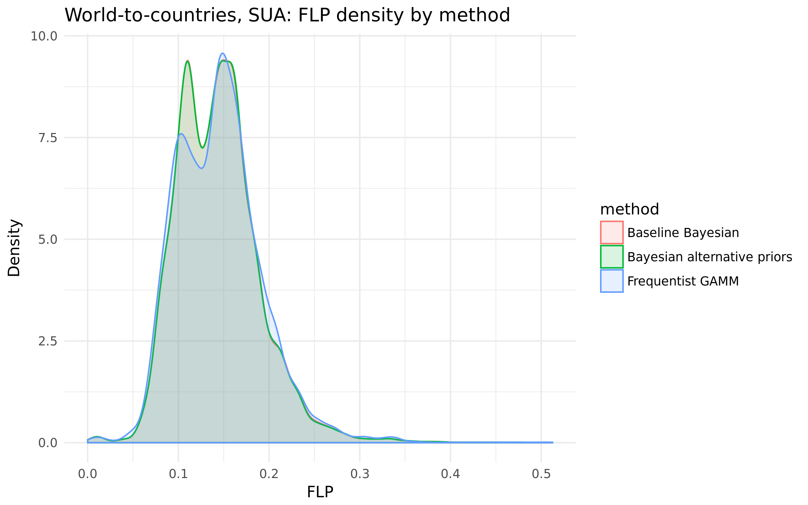
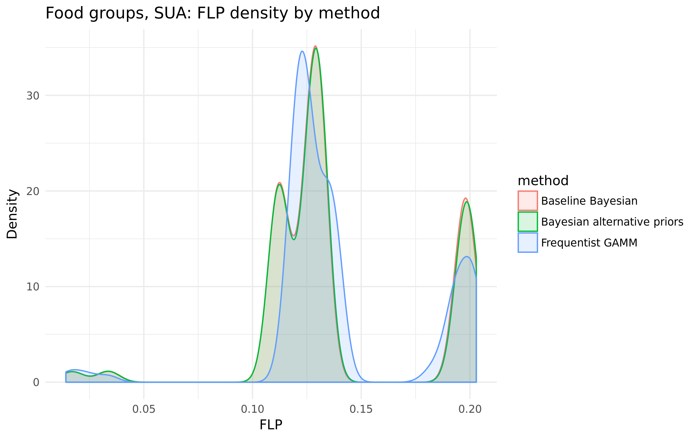
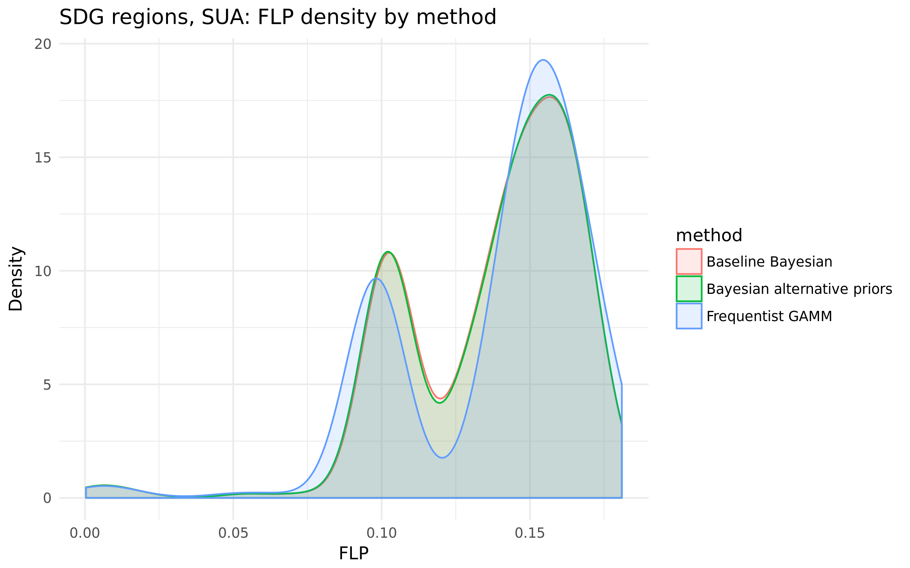
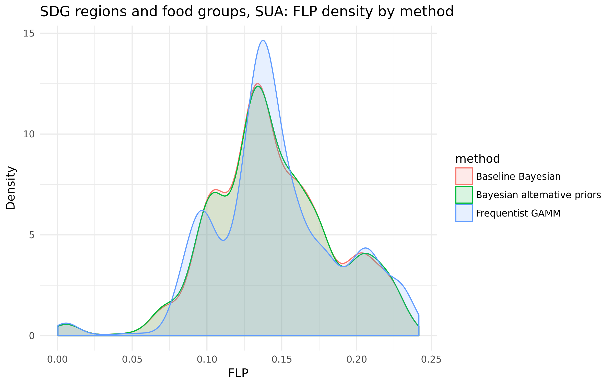
9.4 Grafical comparison of FLP estimates
Figure 3, Figure 4, Figure 5 and Figure 6 provide a graphical comparison of the FLP estimates obtained under the three model specifications. The purpose is to compare the estimated FLP levels directly across methods and aggregation levels. The figures are reported for food groups, SDG regions, SDG region by food group combinations, and the world aggregate over time, separately for the SUA and Survey settings. For the graphical FLP comparison, the focus is restricted to the year 2023. This choice was made because the QA outputs for 2024 showed incomplete coverage for some country–product combinations. Since the FLP aggregation is computed from the observations available in a given year, missing high-weight or high-loss combinations could distort the resulting aggregates and reduce comparability across methods and aggregation levels.
At the food-group level, the baseline Bayesian model and the Bayesian model with alternative priors are almost indistinguishable in both the SUA and Survey outputs. In both settings,Fruits & Vegetables show the highest FLP, while Cereals & Pulses show the lowest. The frequentist GAMM is more distinct. In the SUA results it is lower than the Bayesian estimates for Fruits & Vegetables and Meat & Animals Products, while it is slightly higher for Cereals & Pulses and Roots, Tubers & Oil-Bearing Crops. In the Survey results, the frequentist GAMM is above both Bayesian specifications for all four food groups, with the largest visible differences for Fruits & Vegetables, Roots, Tubers & Oil-Bearing Crops, and Cereals & Pulses.
A similar picture emerges at the SDG-region level. Again, the two Bayesian specifications remain very close across all regions, both for SUA and for Survey. The frequentist GAMM differs more substantially. In the SUA results, it is below the Bayesian estimates in some regions and above them in others, so the differences do not move in a single direction. In the Survey results, however, it is consistently above both Bayesian models in all reported SDG regions. The highest FLP values are observed for Sub-Saharan Africa, while the lowest values are observed for Northern America and Europe and Australia and New Zealand.
The SDG-region-by-food-group figures provide a finer level of detail. Also in these plots, the baseline Bayesian and the Bayesian alternative-prior specifications remain nearly superposed in almost all region–food group combinations. The frequentist GAMM shows a more variable behaviour. In the SUA setting, it may be either above or below the Bayesian values depending on the specific combination considered. In the Survey setting, it is more often above the Bayesian values, especially for Fruits & Vegetables and Roots, Tubers & Oil-Bearing Crops, although the magnitude of the gap still depends on the region.
Finally, the world time-series plots confirm the same general pattern over the whole considered period. The two Bayesian specifications remain extremely close and evolve smoothly over time in both the SUA and Survey series. By contrast, the frequentist GAMM shows a visibly different trajectory. In the SUA series it oscillates more strongly around the Bayesian curves, while in the Survey series it remains clearly above them throughout the entire period shown. These world-level plots therefore reinforce the main descriptive conclusion of the graphical comparison: the alternative-prior Bayesian specification remains very close to the baseline Bayesian model, whereas the frequentist GAMM produces the most visibly different FLP patterns, especially in the Survey setting.
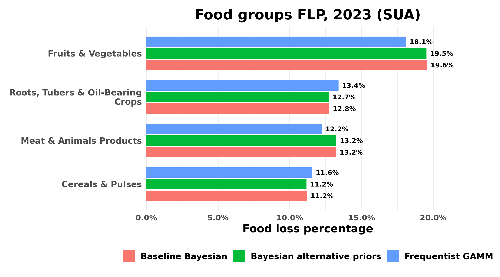
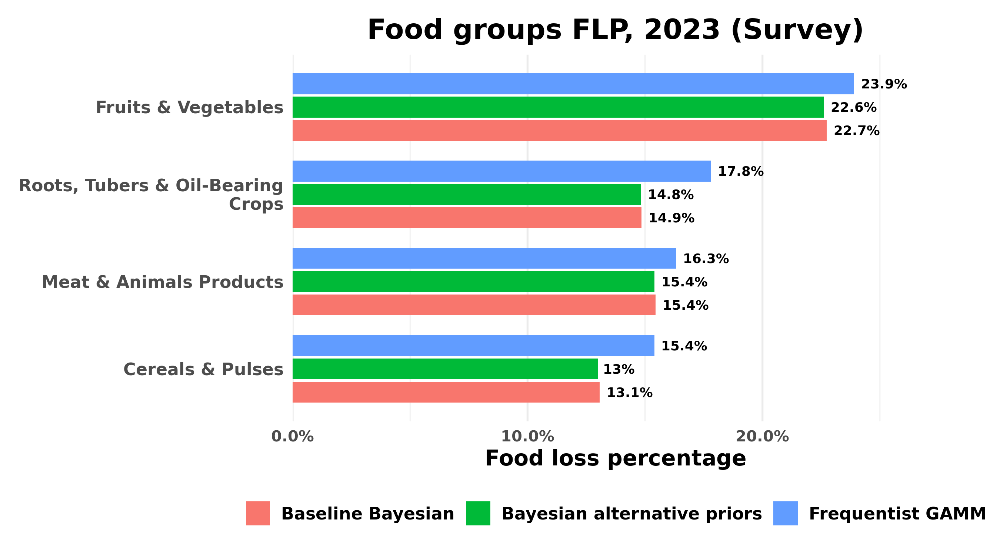
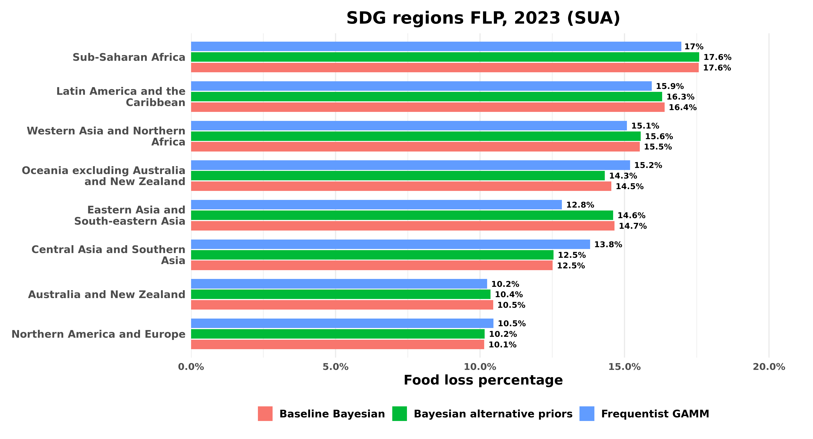
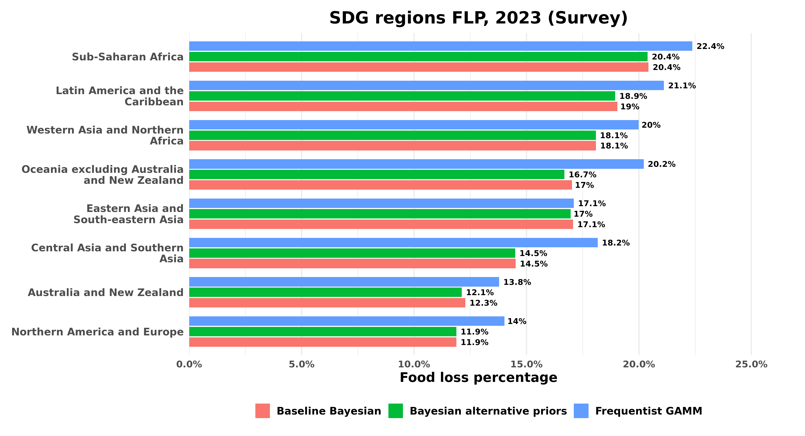
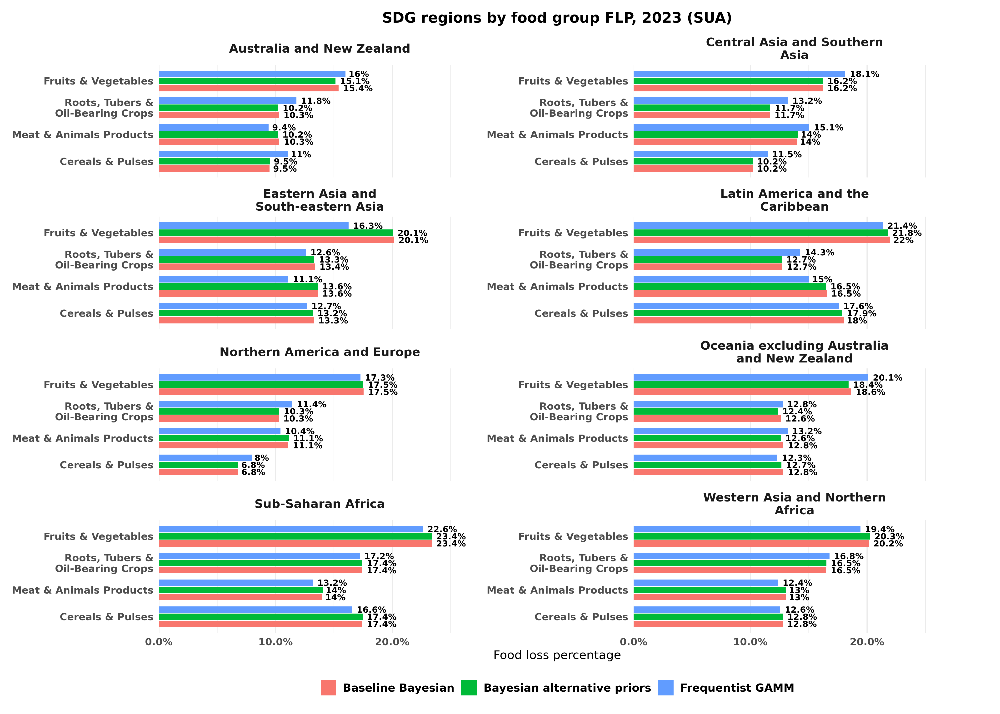
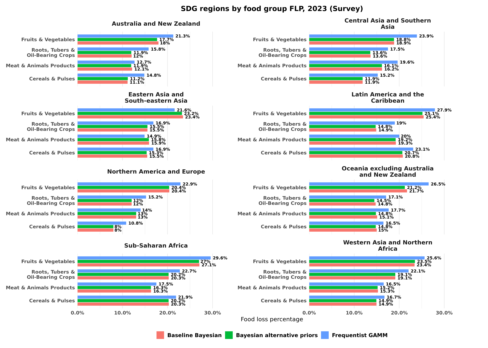
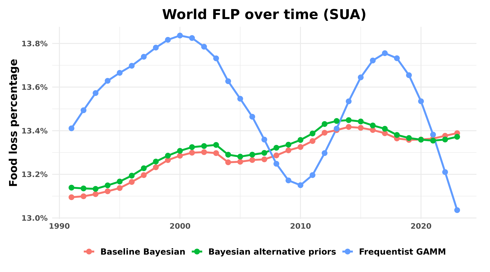
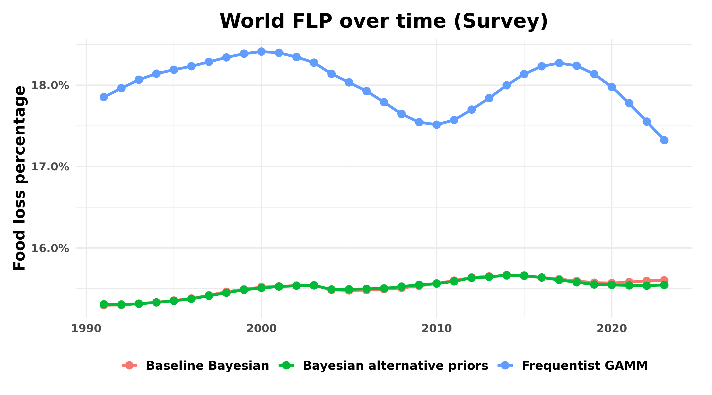
9.5 Main insights
The comparison exercises show that the baseline Bayesian model and the Bayesian model with alternative priors produce very similar FLP and FLI outputs across all aggregation schemes considered here. The frequentist GAMM benchmark also yields series that are broadly comparable in structure, although the magnitude and spread of the deviations from the baseline Bayesian outputs are generally larger than in the alternative-prior Bayesian comparison. This pattern is visible both in the summary measures and in the graphical analyses of the distribution of deviations.
These results should be interpreted descriptively. The purpose of the present comparison is not to rank the methods as better or worse, but rather to document how the different modelling choices translate into differences in the final indicator outputs under a harmonized FLP/FLI calculation framework. In this sense, the analysis helps clarify which comparisons are negligible, which are more substantial, and at which aggregation levels the resulting series remain closest or become more distinct.
Taken together, the results provide a structured basis for understanding the relationship between the three modelling approaches and for interpreting the extent to which differences at the model-estimate level carry through to the derived FLP and FLI indicators.